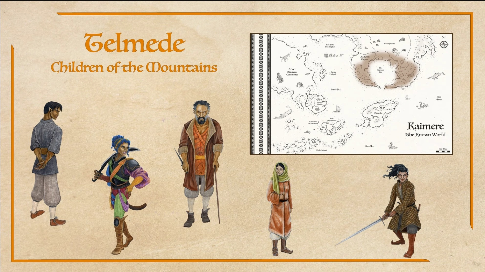
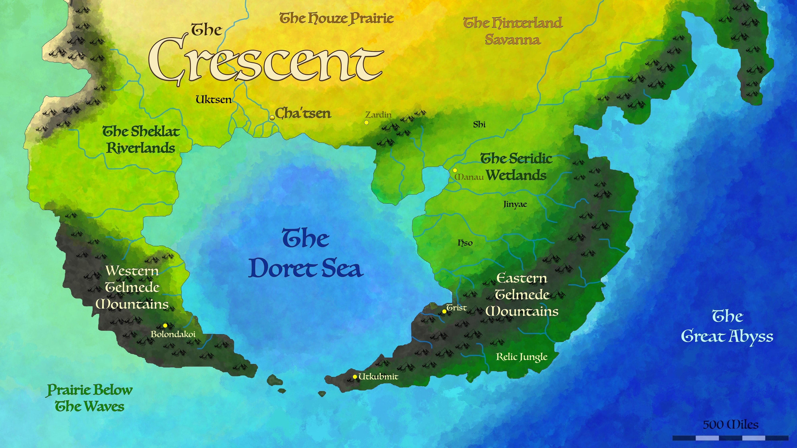
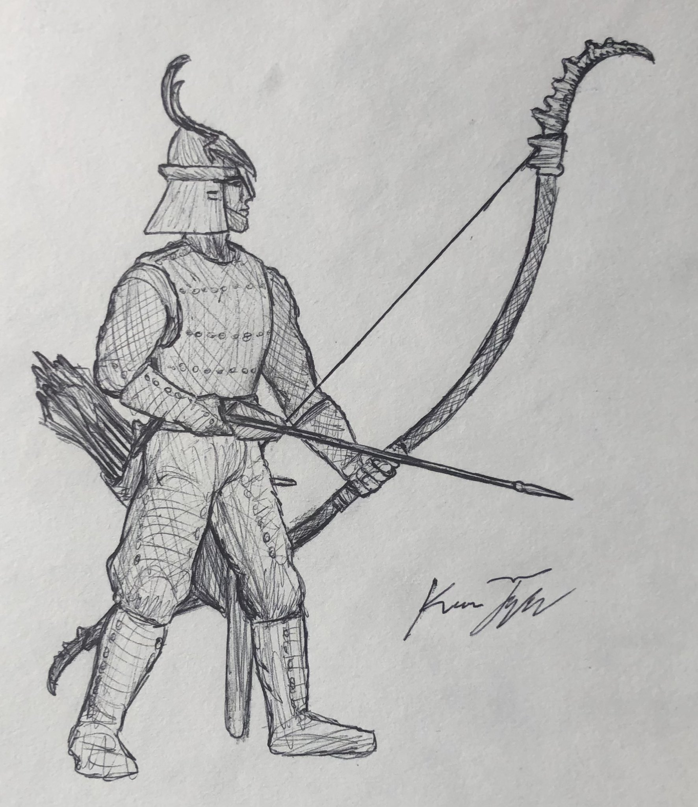
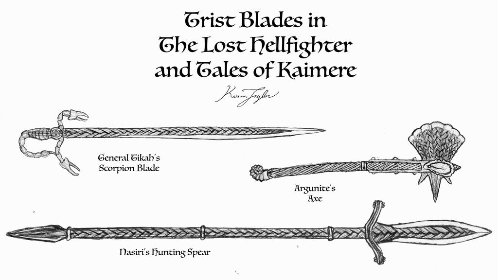
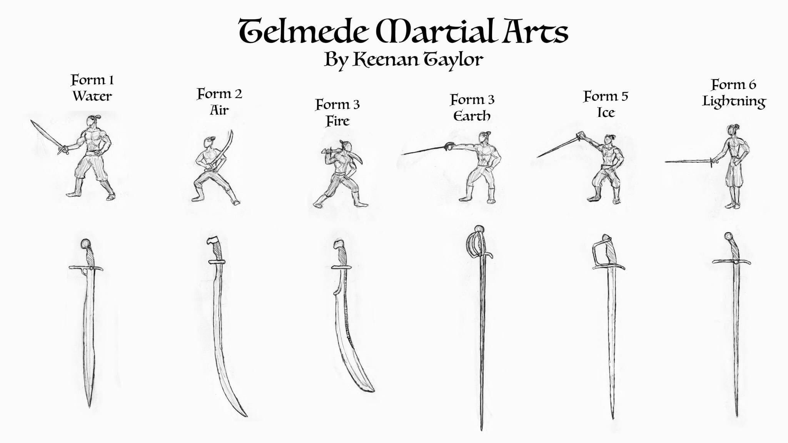
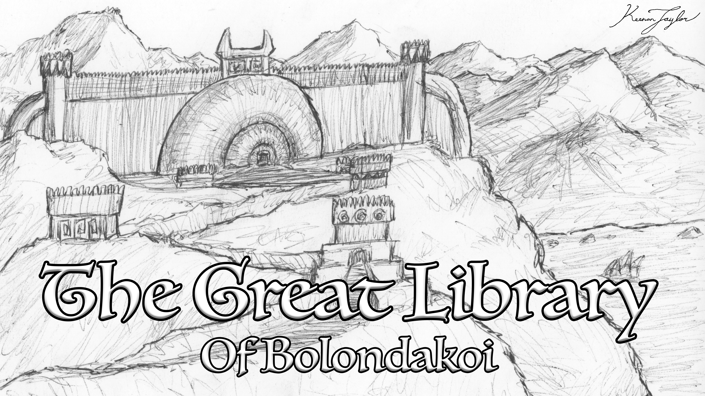

01 · INTRODUCTION
Overview

The Telmede, traditionally known as the Children of the Mountains, are a broad cultural and ethnic grouping native to the Crescent Peninsula of southern Ni'Khar. They encompass numerous peoples whose identities developed among the peninsula's mountains, river valleys, wetlands, forests, and coastal lowlands. Although connected by a shared regional heritage, the Telmede are not a single homogeneous population. Their constituent peoples possess distinct political histories, economic traditions, religious practices, and martial systems.
For millennia, the Crescent was divided among competing city-states, kingdoms, and regional empires. Political authority repeatedly shifted between the lowland civilizations of the western peninsula, the Seridic communities of the eastern wetlands, and the fortified principalities of the mountains. These states frequently fought one another, yet few maintained control over the entire region for long. The geography of the peninsula encouraged political fragmentation: mountains divided neighboring territories, waterways supported independent centers of commerce, and heavily fortified settlements made conquest costly.
This long history of competition produced a collection of highly developed regional traditions. The Telmede became known for their defensive architecture, skilled metalwork, sophisticated martial arts, and institutions devoted to the preservation of knowledge. Their societies also developed distinctive relationships with their surrounding environments, ranging from the carefully administered river civilization of the Zardic to the amphibious settlements of the Seridic wetlands.
The arrival of the Cha'Khati from the north transformed the political order of the Crescent. Rather than establishing another short-lived regional kingdom, the Cha'Khati gradually consolidated the peninsula into a single imperial system. Today, many Telmede communities accept imperial rule because of the security, commercial opportunities, and infrastructure provided by the united trade empire. Others remain more resistant to centralization, particularly the Serid, whose history of opposition to outside authority has continued into the imperial period.
02 · CULTURAL HORIZONS
Geographical Distribution

The traditional homeland of the Telmede is the Crescent Peninsula, a crescent moon shaped region extending southward from Ni'Khar and surrounding the Crescent Sea. The peninsula's geography is varied, containing rugged highlands, sheltered valleys, river systems, dense vegetation, productive wetlands, and coastal settlements. These environments have supported numerous societies with markedly different ways of life.
The western peninsula contains important grasslands, riparian forests, river valleys. In the center is an intersection between the two peninsula's that connects the Houze Prairie and Zardin Savannah. In this area are numerous urban centers, including Zardin and Cha'tsen. Here, agriculture, commerce, and permanent settlement have supported complex civic institutions. The eastern peninsula is dominated in part by the Seridic Wetlands, where rivers, lakes, marsh forests, and seasonally flooded grasslands determine settlement patterns and subsistence. Elsewhere, the mountainous interior contains fortified cities and principalities whose independence was maintained through defensive terrain and extensive fortifications.
The environment has influenced not only the economy of each region but also its political and military history. River systems connect settlements and support trade, while mountain passes channel movement through defensible approaches. The wetlands favor watercraft and ecological knowledge, whereas the highlands reward the use of fortified positions, archery, and infantry trained to fight in confined terrain.
03 · RISE AND FALL OF KINGDOMS
History and Political Development
Before the rise of the Cha'Khati Empire, the Crescent was dominated by a succession of competing Telmede states. The Serid and Sheklat established some of the region's most extensive lowland empires, while highland powers periodically descended from the mountains to impose their own authority over neighboring territories. The political history of the Crescent was therefore not a simple succession of centralized kingdoms, but a repeated cycle of consolidation, resistance, fragmentation, and renewed conquest.
The Shu played an important role in this cycle long before their establishment of the modern Empire. Northern raiding forces frequently entered the Crescent when its indigenous powers were weakened by civil conflict or dynastic collapse. During the First Sheklat Empire, Shu raiding armies reportedly numbered in the hundreds of thousands. Their incursions became closely associated with the decline of Telmede states, even though they were not necessarily responsible for causing those states to collapse.
Shu conquests before the Cha'Khati period were generally short-lived. Telmede observers interpreted this pattern as evidence that the Shu were better suited to raiding than permanent settlement. This interpretation overlooked the settled communities and matrilineal clan structures found within Shu society. Many earlier conquests occurred when the Crescent's political institutions had already been weakened, leaving insufficient resources for new rulers to establish a durable administration.
The founding of the Cha'Khati Empire differed substantially from these earlier incursions. A severe drought in the north drove a large migration southward, including not only warriors but also women, children, families, and communities seeking new homes. Oni's leadership helped unite the migrating Shu, while the armies that accompanied them opened the way for a much larger population to settle within the Crescent.
The Sheklat were conquered comparatively quickly, while the incorporation of the Serid and the mountain Telmede required decades of additional campaigning. The highland states proved particularly difficult opponents because of their fortifications, skilled soldiers, and command of mountainous terrain. The conquest of the Crescent was consequently a prolonged process rather than a single military victory.
Bolondakoi agreed to imperial terms in 1533, retaining control of its renowned library while accepting taxation and the transfer of selected technologies to the Empire. The remaining western territories were subsequently brought under imperial authority, after which the Cha'Khati concentrated their efforts against Utkubmit and Trist. Their resistance continued for decades, and the final consolidation of the Crescent was achieved only after further military campaigns.
Imperial rule has not eliminated Telmede political grievances. Revolts have occurred in several regions, including the Seridic Wars of the 1610s. Although these movements failed to dismantle the Empire, they demonstrate that political integration has not produced universal acceptance of imperial authority.
04 · CIVIC DUTY OR COMMUNAL ORGANIZATION
Society and Cultural Traditions
Telmede society is characterized by considerable regional variation. The civic traditions of Zardin differ from the communal organization of Seridic wetland settlements, while the mountain provinces maintain distinctive customs shaped by fortification warfare, metalworking, and the preservation of local authority. These differences make it difficult to describe a single Telmede way of life beyond their shared regional heritage and long history of interaction.
Family, community reputation, and inherited tradition are important in many Telmede societies, although their expression varies between regions. In Zardin, family honor is closely associated with civic service, education, and the responsible management of estates. Among the Serid, extended households and cooperative labor are central to life in the wetlands. In the mountain provinces, local loyalties and the obligations associated with fortified settlements have historically been inseparable from political and military life.
Religious practice also reflects this diversity. The spread of the Merciful Sun under Cha'Khati rule has established a shared religious framework across much of the Crescent. Nevertheless, older traditions continue to survive beneath official observances. Some communities preserve ancestral customs and local religious practices, while others express their spirituality through the natural environments that sustain them.
Imperial institutions have introduced common administrative procedures, legal frameworks, and commercial regulations. Yet these institutions frequently depend upon local officials and established community leaders. In many places, imperial governance operates through existing regional structures rather than replacing them entirely. This arrangement has allowed some Telmede communities to preserve considerable cultural continuity despite the loss of independent political authority.
05 · SEIGES AND CONQUESTS
Warfare and Martial Traditions
The Telmede have a longstanding reputation for martial skill. Centuries of conflict between neighboring city-states, rival dynasties, and mountain lords produced sophisticated traditions of infantry combat, archery, fortification, and defensive warfare. The region's terrain encouraged military systems designed to exploit narrow approaches, elevated firing positions, and strong defensive works.
Unlike the mobile cavalry traditions associated with the northern Shu, many Telmede armies were adapted to fighting from fortified positions or within confined mountainous terrain. Their soldiers often relied upon shields, polearms, bows, and substantial armor. In the eastern highlands, the availability of iron deposits supported a strong metalworking tradition and the production of durable military equipment.

The Utkubmitir became particularly renowned for their defensive archery. Their distinctive asymmetrical longbows were developed for shooting from battlements, towers, and elevated mountain positions, where conventional bow designs could be difficult to manipulate. Their infantry, equipped with shields and polearms, was similarly adapted to holding narrow passes and resisting assaults against fortified approaches.

Trist developed another important martial tradition through its highly regarded smiths. Tristir metalworkers became famous for producing exceptional blades and flexible, durable armor. Their work is valued throughout the Known World, both for its practical performance and for the prestige associated with finely commissioned weapons. The tradition demonstrates how competition between Telmede city-states encouraged not only military innovation but also specialized craftsmanship.

Telmede martial arts have also exerted influence beyond the Crescent. The six principal Utkubmitir forms, commonly associated with Water, Air, Fire, Earth, Ice, and Lightning, emphasize different combinations of adaptability, mobility, aggression, defense, counterattack, and deliberate precision. Although numerous additional forms are studied by regional schools, these six provide a widely recognized framework for understanding the tradition.
The widespread Kaimeran aversion to killing has influenced the weapons used in these martial systems. The Telmede rubberhead, a striking weapon with a pronounced hooked profile, allows practitioners to deliver blunt impacts while also controlling an opponent's limbs, weapons, or shield. Its design reflects the broader preference for disabling an adversary without necessarily causing fatal injury.
Following the conquest, the Empire incorporated many Telmede military traditions into its own armed forces. Utkubmitir archers remain particularly valuable for defending imperial fortifications, while the region's infantry and metalworkers continue to contribute to the Empire's military capabilities. The resulting military culture combines the mobile warfare of the Shu with the specialized traditions of the Crescent's indigenous peoples.
06 · UNIVERSITIES AND LIBRARIES
Scholarship and the Preservation of Knowledge

The Telmede are also associated with an important tradition of scholarship and historical preservation. The western mountains contain Bolondakoi, home of the Great Library, an institution whose origins are connected to the preservation of ancient records, artifacts, and collections of knowledge.
The institution's earliest foundations are traditionally associated with the collection of Isatu, a witch said to have lived during or descended from the great witches of the Age of Witches. Her collection reportedly contained records from the Age of Witches, accounts reaching back to the Age of Demons, and materials associated with the reign of the First Children. Following the transfer of the collection to the noble family of Chama Alashu, its preservation became a lasting responsibility for successive generations.
After the Alashu family was executed during the expansion of the First Sheklat Empire, archivists retreated into the mountains with many of the collection's most valuable objects. These custodians became known as the Isatueti, or Krakens of Isatu, and adopted the chambered spiral of the ammonite as a symbol of the preservation of knowledge. Their archives were repeatedly threatened by warfare, political upheaval, and attempts to destroy the collection, leading to increasingly elaborate methods of concealment and protection.
Under the Cha'Khati Empire, Bolondakoi secured an arrangement that allowed the Isatueti to retain control of the library while sharing selected technologies and accepting imperial taxation. This agreement enabled the institution to expand its activities. The Great Library now supports extensive archives, museums, zoological gardens, colleges, and research expeditions. Its scholars investigate both the historical record and the natural world, while its engineering departments produce specialized ships, steam-powered carriages, and other advanced constructions.
Bolondakoi illustrates a distinctive aspect of Telmede history: the survival of institutions through repeated political transformations. Although the city has endured conquest and destruction, its accumulated knowledge has become valuable to the modern Empire. Scholarship and historical preservation consequently remain central to the city's identity and prosperity.
07 · Under the empire
The Telmede Under Imperial Rule
The incorporation of the Crescent into the Cha'Khati Empire altered the political and economic relationships between the Telmede communities. Formerly independent cities and provinces now participate in a larger system of taxation, trade, administration, and imperial law. Roads and commercial networks connect communities that once competed for regional dominance, while imperial institutions provide a common framework for commerce and political negotiation.
For many Telmede, these changes have brought tangible benefits. Merchants can operate across a wider commercial network, regional producers gain access to distant markets, and local administrations can draw upon the resources of the Empire. The Zardic, Tristir, Utkubmitir, and Bolondakir are among the peoples whose regional institutions and economic activities have adapted to imperial rule in different ways.
These advantages have not erased the distinction between imperial unity and local independence. The Serid remain among the most outspoken opponents of their subjugation, and memories of the Crescent's earlier political order continue to inform regional identities. For the Telmede, the modern Empire is simultaneously a source of stability, an economic framework, and a political authority established through conquest.
The Telmede therefore remain an essential component of the Cha'Khati Empire without being culturally indistinguishable from the Shu. Their cities, languages, traditions, military systems, and institutions preserve the legacy of civilizations that existed long before imperial consolidation. The history of the Crescent is not simply the story of an empire absorbing its neighbors, but of numerous older societies continuing to shape the character of the state that conquered them.
08 · Culture ACCOUNTS
Major Telmede Peoples
The Telmede encompass numerous ethnic communities and regional cultures. The following groups are among the most significant in the history of the Crescent and the modern Cha'Khati Empire. Each developed distinctive institutions in response to its environment and historical circumstances.
The Zardic
An urban river civilization centered on Zardin and its surrounding agricultural lands. Zardic society emphasizes civic duty, religious devotion, family honor, education, and orderly public life. Its merchants and officials participate extensively in imperial commerce and administration while preserving a strong identity rooted in their city.
Read culture article →The Serid
The river peoples of the Seridic wetlands, whose societies developed around waterways, marshes, floodplains, and swamp forests. Their traditions emphasize ecological knowledge, watercraft, communal labor, and adaptation to seasonal changes. The Serid retain a strong regional identity and have been among the most outspoken opponents of Cha'Khati imperial rule.
Read culture article →The Utkubmitir
The mountain peoples associated with Utkubmit and the eastern highlands. Historically renowned for fortress construction, defensive archery, disciplined infantry, ironworking, and martial arts, the Utkubmitir developed military traditions adapted to steep terrain and prolonged sieges. Their methods remain influential within imperial forces.
Read culture article →The Tristir
The inhabitants of Trist, an eastern mountain city-state famed for its exceptional metallurgy. Tristir smiths produce blades and armor distinguished by strength, flexibility, and sophisticated construction. Their work is prized throughout the Known World, serving both practical military needs and the demands of wealthy patrons seeking highly personalized weapons.
Read culture article →The Bolondakir
The people of Bolondakoi, whose history is closely associated with the preservation of ancient knowledge. The city is home to the Great Library of Bolondakoi, a vast institution of archives, universities, museums, zoological gardens, and engineering workshops. Its scholars maintain collections spanning multiple historical ages of Kaimere.
Read culture article →